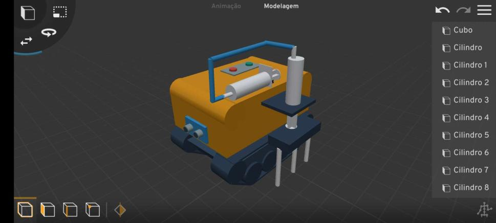
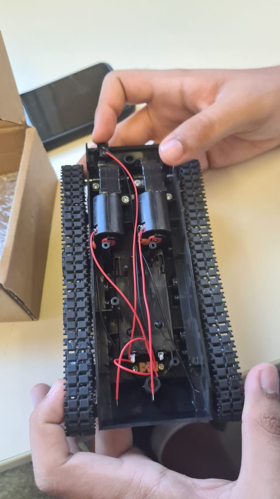

O Projeto
Será desenvolvido um projeto usando Arduino Uno e uma esteira como base. Os componentes incluem sensor ultrassônico, potenciômetro e ponte H, conectados por jumpers. Um robô com garra perfuradora controlada por servo motor será montado. A programação ocorrerá na plataforma Arduino IDE usando C++. Após a programação, o robô passará por testes para correções e ajustes.

Fonte: https://www.arduino.cc/
O Processo de Desenvolvimento
Utilizamos a plataforma Roblox no servidor Plane Crazy para desenvolver um esboço de como o carrinho atuaria na plantação de sementes, onde o carrinho possui uma garra que estará perfurando a terra colocada nos tubetes. Assim que ele terminar de fazer esse processo em uma fileira, ele passará para a próxima repetindo esse processo até que todos os tubetes estejam preenchidos com sementes.
Fonte: Próprio autor
Também utilizamos o aplicativo mobile Prisma 3D, que é um aplicativo de modelagem 3D e animação, para desenvolver um modelo mais detalhado do projeto, com o objetivo de ter maior noção de como será a figura do protótipo final.

Fonte: Próprio autor
Estamos montando o projeto no labmaker construído na etec ferrucio humberto gazzeta, onde começamos pela base do carrinho onde identificamos os fios e onde eles estão ligados, com isso identificado verificamos os itens que não estão em nossa posse para comprá-los. Já para a carcaça e para a garra do carrinho usaremos a impressora 3D disponibilizado no labmaker, assim que a mesma estiver pronta iremos implementar os componentes à base do carrinho e colocar a carcaça junto com a garra por cima.
A seguir a imagem do Chassi de Tanque Esteira que foi a principal peça utilizada para montagem do projeto:
